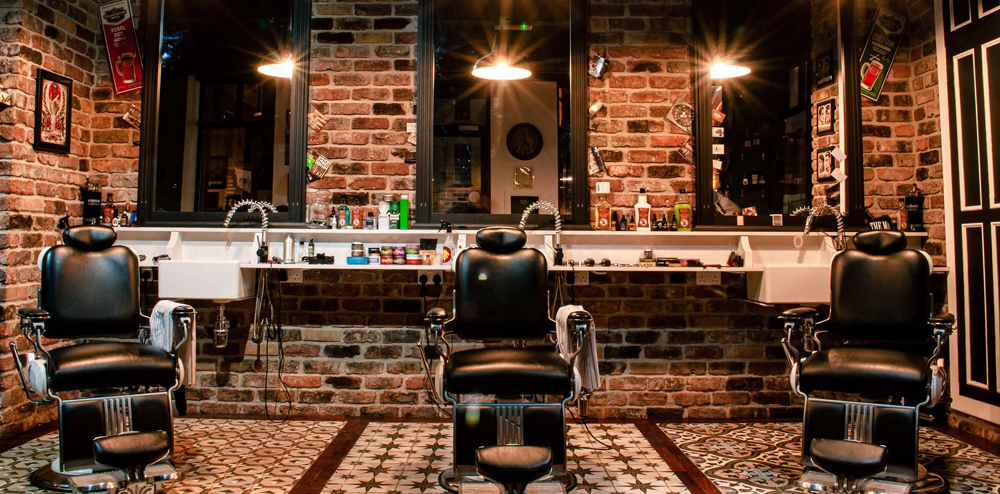

<section class="h-screen relative flex justify-center items-end">
  

  <div class="relative">
    
    <div
      class="w-80 h-60 absolute z-0 bottom-0 radial-gradient translate-center-x"
    ></div>
  </div>

  <div
    class="w-full h-20 absolute bg-gradient-to-t from-black to-transparent"
  ></div>
</section>
